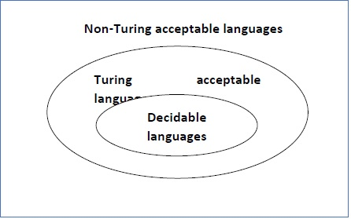
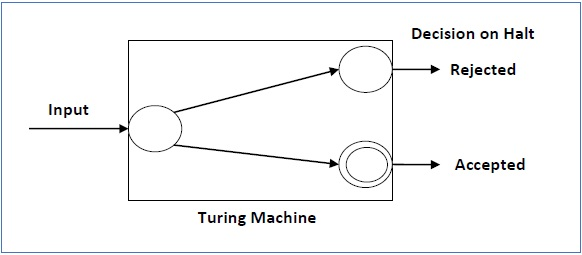
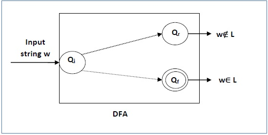

Language Decidability
A language is called Decidable or Recursive if there is a Turing machine which accepts and halts on every input string w. Every decidable language is Turing-Acceptable.

A decision problem P is decidable if the language L of all yes instances to P is decidable.
For a decidable language, for each input string, the TM halts either at the accept or the reject state as depicted in the following diagram −

Example 1
Find out whether the following problem is decidable or not −
Is a number ‘m’ prime?
Solution
Prime numbers = {2, 3, 5, 7, 11, 13, …………..}
Divide the number ‘m’ by all the numbers between ‘2’ and ‘√m’ starting from ‘2’.
If any of these numbers produce a remainder zero, then it goes to the “Rejected state”, otherwise it goes to the “Accepted state”. So, here the answer could be made by ‘Yes’ or ‘No’.
Hence, it is a decidable problem.
Example 2
Given a regular language L and string w, how can we check if w ∈ L?
Solution
Take the DFA that accepts L and check if w is accepted

Some more decidable problems are −
- Does DFA accept the empty language?
- Is L1 ∩ L2 = ∅ for regular sets?
Note −
-
If a language L is decidable, then its complement L' is also decidable
-
If a language is decidable, then there is an enumerator for it.